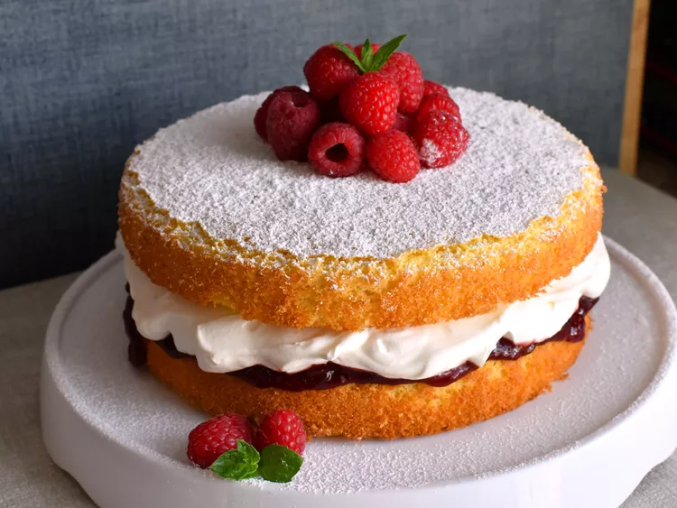

Victoria Sponge Cake

Is Victoria Sponge Cake?
A Victoria sponge cake a.k.a. a Victoria sandwichis a British dessert that
consists of jam and cream sandwiched between two delicate cake layers. The
dish gets its name from Queen Victoria, who is said to have made a habit of
enjoying the cake with her afternoon tea.
Victoria Sponge Cake Ingredients
- For the cake: baking spray, all-purpose flour, baking powder, cornstarch, kosher salt, granulated sugar, butter or margarine, eggs, vanilla extract, whole milk, and strawberry or raspberry preserves
- For the whipped cream: heavy whipping cream, powdered sugar, and vanilla extract
- To garnish: Powdered sugar and fresh strawberries
How to Make Victoria Sponge Cake
You’ll find the full, step-by-step recipe below —- but here’s a brief overview of what you can expect when you make homemade Victoria sponge cake:
- Sift the dry ingredients together in one bowl and set aside.
- Beat the butter and sugar with a mixer, then beat in the eggs and vanilla.
- Mix in the flour mixture on low speed, alternating with the milk.
- Bake in the prepared cake pans until a toothpick comes out clean.
- Spread the preserves on the top of one cooled cake layer.
- Make the whipped cream, then spread over the preserves.
- Top with the remaining layer, duster with powdered sugar, and top with berries.